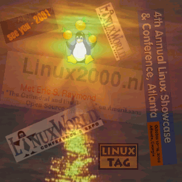

Este mes de octubre ha visto una cocentracion inusualmente alta de conferencias
sobre Linux. Todas a la vez. Comenzó con la
www.LinuxWorldExpo.de en Frankfurt,
Alemania, entre el 5 y el 7 de octubre. Linus estuvo por allí, aunque no
presentó ninguna ponencia clave. La siguiente fue
www.linux2000.nl en Ede, Holanda (9 y
10 de octubre). Allí la ponencia principal fue presentada por Eric Raymond.
La última de la serie ha sido la Atlanta Linux Showcase & Conference,
(www.linuxshowcase.org) del 10 al
14 de octubre. Antes de estos tres fue el día de linux
(linuxtag.de), a comienzos de Julio.
Todos ellos atrayeron un importante número de visitantes, y LinuxFocus estuvo en
el linux2000.nl, probablemente el más pequeño de los tres. Hice algunas
fotos que se pueden encontrar
aquí.
Era la primera vez que veía a Eric Raymond. Su ponencia fue realmente buena.
Si alguna vez tienen la oportunidad de escucharle en algún lugar, se lo
recomiendo. Lo que realmente me gusta de estos eventos no es tanto la
parafernalia que se organiza igual que en cualquier evento comercial, sino
la pasión y el entusiasmo de los fans de Linux que acuden a ellos.
Los periódicos concentraron en esos días multitud de historias sobre el
enfrentamiento entre Linux y Windows, aunque ese tipo de historias dramáticas
son una receta tradicional para escribir artículos periodísticos.
Linux no es simplemente otro sistema operativo. Es mucho más que eso.
Es una auténtica comunidad formada for aficionados y usuarios. Espero que
seamos capaces de conservar esta comunidad y su espíritu entusiasta.
 Introducción al lenguaje Tk
, por Charles Vidal
Descubriendo Ted
, por André Pascual
Erase una vez ... o el Unix comercial frente al Unix libre, y más
, por Georges Tarbouriech
xinetd
, por Frédéric Raynal
NFS - Sistema de Ficheros en Red
, por Frédéric Raynal
Alta Disponibilidad en sistemas con Linux
, por Atif Ghaffar
Utilidades GNU
, por Manuel Muriel Cordero
Introducción al lenguaje Tk
, por Charles Vidal
Descubriendo Ted
, por André Pascual
Erase una vez ... o el Unix comercial frente al Unix libre, y más
, por Georges Tarbouriech
xinetd
, por Frédéric Raynal
NFS - Sistema de Ficheros en Red
, por Frédéric Raynal
Alta Disponibilidad en sistemas con Linux
, por Atif Ghaffar
Utilidades GNU
, por Manuel Muriel Cordero
¿Donde estaba aquella página? Hmmm, tenía un enlace entre mis
bookmarks del Netscape .... Pero tengo como 250 entradas...
Era algo así como "focus" y tenía alguna relación con Linux ...
¿Te ha ocurrido esto alguna vez?
Aquí tienes un pequeño script llamado showbook.
Sálvalo como showbook y escribe chmod 755 showbook para convertirlo
en ejecutable, y, por ejemplo, con
showbook focusobtendrás una lista de todos tus bookmarks que tengan "focus" en la url o en la descripción de la misma, sin importar si estaba en mayúsculas o minúsculas.
|
© 1999 LinuxFocus Página de contacto con LinuxFocus |